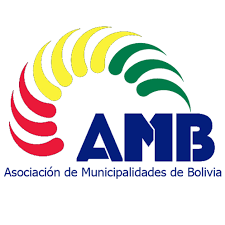
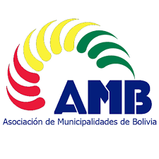
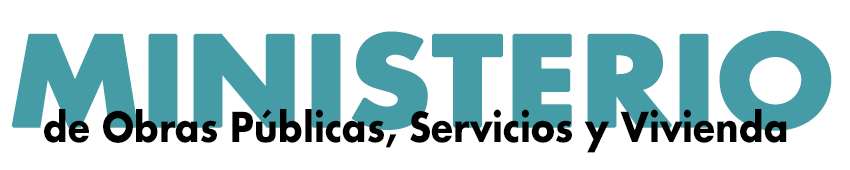
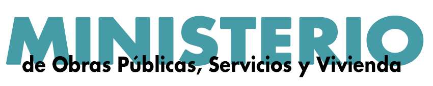

NUESTRA PLATAFORMA
Permite el acceso al conocimiento de las realidades económicas locales (municipales), para apoyar la planificación del desarrollo desde el nivel local, como un instrumento escalable.
La esencia del sistema sostiene que el desarrollo se basa necesariamente en las construcciones locales y regionales, toda vez que las políticas públicas inevitablemente terminan ejecutándose en estas áreas. El Sistema ha obtenido la medición de los 339 municipios que componen Bolivia.
Los resultados de las pruebas realizadas durante el período de diseño instrumental, consistencia y calibración, muestran que es posible aplicar las técnicas y métodos sugeridos para la construcción de un sistema nacional o agregado, desde sub-sistemas nacionales y abriendo la oportunidad de aplicar análisis económico cuantitativo; mejorando considerablemente el espectro de variables y elementos a tomar en consideración para mejorar los procesos de planificación del desarrollo económico local, regional y, por tanto, nacional.
 

 
